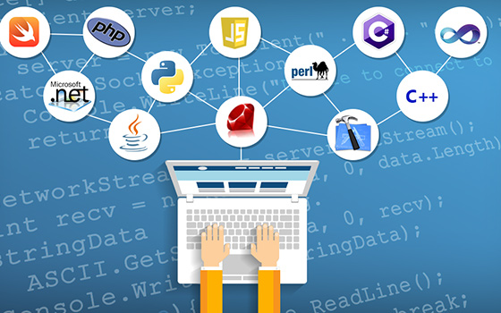

¿QUE ES LA PROGRAMACIÓN?
Es el proceso de tomar un algoritmo y codificarlo en una notación, un lenguaje de programación, de modo que pueda ser ejecutado por una computadora. Aunque existen muchos lenguajes de programación y muchos tipos diferentes de computadoras, el primer paso es la necesidad de tener una solución. Sin un algoritmo no puede haber un programa.

Es una parte importante de lo que hace un científico de la computación. La programación es a menudo la manera en la que creamos una representación para nuestras soluciones. Por tanto, esta representación en un lenguaje y el proceso de crearla se convierte en una parte fundamental de la disciplina.
La programación puede seguir muchos enfoques, o paradigmas, es decir, diversas maneras de formular la resolución de un problema dado. Algunos de los principales paradigmas de la programación son:
- PROGRAMACION DECLARATIVA
- Está basado en el desarrollo de programas especificando o "declarando" un conjunto de condiciones, proposiciones, afirmaciones, restricciones, ecuaciones o transformaciones que describen el problema y detallan su solución. La solución es obtenida mediante mecanismos internos de control, sin especificar exactamente cómo encontrarla (tan solo se le indica a la computadora qué es lo que se desea obtener o qué es lo que se está buscando). No existen asignaciones destructivas, y las variables son utilizadas con transparencia referencial.
- PROGRAMACION ESTRUCURADA
- Es un paradigma de programación orientado a mejorar la claridad, calidad y tiempo de desarrollo de un programa de computadora recurriendo únicamente a subrutinas y tres estructuras básicas: secuencia, selección (if y switch) e iteración (bucles for y while); asimismo, se considera innecesario y contraproducente el uso de la instrucción de transferencia incondicional (GOTO), que podría conducir a código espagueti, mucho más difícil de seguir y de mantener, y fuente de numerosos errores de programación.
- PROGRAMACION MODULAR
- Consiste en dividir un programa en módulos o subprogramas con el fin de hacerlo más legible y manejable. Se presenta históricamente como una evolución de la programación estructurada para solucionar problemas de programación más grandes y complejos de lo que esta puede resolver.
- PROGRAMACION ORIENTADA A OBJETOS
- La programación orientada a objetos (POO, u OOP según sus siglas en inglés) es un paradigma de programación que viene a innovar la forma de obtener resultados. Los objetos manipulan los datos de entrada para la obtención de datos de salida específicos, donde cada objeto ofrece una funcionalidad especial.